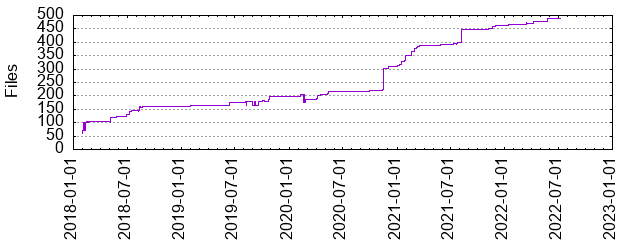

Files
- Total files
- 488
- Total lines
- 53087
- Average file size
- 3911.79 bytes

| Extension | Files (%) | Lines (%) | Lines/file |
|---|
| 75 (15.37%) | 2718 (5.12%) | 36 |
| MD | 1 (0.20%) | 0 (0.00%) | 0 |
| bat | 1 (0.20%) | 18 (0.03%) | 18 |
| bazel | 92 (18.85%) | 1932 (3.64%) | 21 |
| bzl | 58 (11.89%) | 6592 (12.42%) | 113 |
| gradle | 1 (0.20%) | 60 (0.11%) | 60 |
| jar | 4 (0.82%) | 947 (1.78%) | 236 |
| jarjar | 2 (0.41%) | 2 (0.00%) | 1 |
| java | 33 (6.76%) | 1721 (3.24%) | 52 |
| jdeps | 1 (0.20%) | 0 (0.00%) | 0 |
| json | 2 (0.41%) | 15 (0.03%) | 7 |
| kt | 149 (30.53%) | 37504 (70.65%) | 251 |
| lock | 1 (0.20%) | 321 (0.60%) | 321 |
| md | 10 (2.05%) | 1049 (1.98%) | 104 |
| png | 10 (2.05%) | 356 (0.67%) | 35 |
| proto | 3 (0.61%) | 314 (0.59%) | 104 |
| py | 1 (0.20%) | 83 (0.16%) | 83 |
| sh | 2 (0.41%) | 87 (0.16%) | 43 |
| txt | 5 (1.02%) | 0 (0.00%) | 0 |
| vm | 1 (0.20%) | 43 (0.08%) | 43 |
| xml | 33 (6.76%) | 431 (0.81%) | 13 |
| yaml | 1 (0.20%) | 13 (0.02%) | 13 |
| yml | 2 (0.41%) | 153 (0.29%) | 76 |